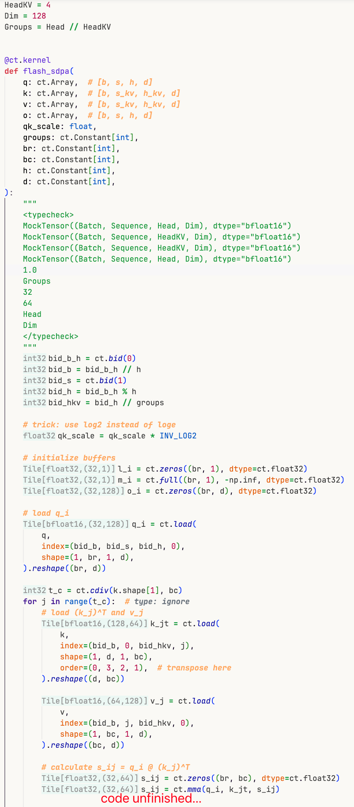

cuTile 历险记，第2集：DX & LSP
eDSL，开发难度，以及DX
DSL（Domain-Specific Language，领域特定语言）是一种专为特定问题领域设计的编程语言。
GPT老师:
DSL 可分为两类：
- 外部 DSL（External DSL）
- 是一种独立的语言，通常需要专门的编译器或解释器。
- 优点：语法可以完全为领域定制，表达力强。
- 缺点：需要开发parser。
- 示例：SQL（用于数据库查询）、正则表达式、Makefile、LaTeX。
- 内嵌 DSL（embedded DSL，eDSL）
- 并非独立语言，而是利用宿主通用语言的语法和特性，在其内部“模拟”出一种贴近领域的表达方式。
- 依赖宿主语言的lexer/parser，无需额外实现。
- 优点：开发便捷。
- 缺点：受限于宿主语言的语法和表达能力；IDE往往无法提供针对DSL的insight（内部类型信息等）。
- 示例：被
@torch.compile作用的torch代码，triton，以及我们的主角cuTile。
听某写了很多个triton kernel的大佬同事说，主要的debug triton代码的方式是：
- 跑一遍看报错
- triton提供的print
- 读IR
并没有能够提供良好的IDE功能的软件可以用，导致许多可以静态知道（并让IDE提供诊断）的类型信息需要靠运行时报错来修复，造成了（个人认为的）DX在这方面的欠缺。
找回静态的信息
编译器的一半的一半的一半
先把cuTile的整个编译流程切一切。
-
上半：开源部分
-
上半：python -> cutile-python-ir (python实现)
- 上半（*）：参数检查，语法检查（不合法的python对象等），类型检查（tile shape/dtype mismatch）
- 下半：基本优化，
eliminate_assign_ops,hoist_loop_invariants,dead_code_elimination_pass等
-
下半：cutile-python-ir -> TileIR (C++实现)
-
-
下半：
tileiras
需求
尝试写一个软件，找回这些静态的信息，并显示到编辑器上。 我对这个软件的需求是：把（*）的检查所确定的尽可能多的信息显示在源代码上。
实现
还好目前cuTile的编译器python侧代码还比较清晰, 趁还没有太多更新先研究个大概
也有一种可能, 机器相关的特性会完全放到
tileiras里面做, python侧永远都不会变得太复杂了
大致结构
-
查看infer type pass生成的IR（下面称为IR）可以发现：
- 大致结构是这样的递归定义：
Program = list[Stmt] Stmt = Block | Assign Block = for + list[Stmt] | if + list[Stmt] + else + list[Stmt]
- 大致结构是这样的递归定义：
-
标识符：
- $开头的标识符是编译器生成的变量($number 用于中间变量, $ret 用于函数展开时传递返回值等)
- 没有$开头的标识符是代码原有的变量；
-
循环里面carry的变量要求（和triton一样）不能改变类型。
-
在python层面的每个assign操作，要么只出现在IR中一次，且携带被推断出来的类型信息；或者在for中被carry的是多次，但是type信息是相同的
-
函数会被完全展开，但是变量名只会添加一个后缀，不会做mangle。
类型检查
我尝试通过如下方式确定每一次assign等号左边的类型:
- 通过每次assign的IR，检查等号左边标识符如果不是$开头的，那么就把这一次assign对应的type信息添加到所需的type信息里面。
- 如果同一次assign的type信息只出现了一次，或者出现了多次且没有冲突，那么就可以得到这一次assign对应的type信息。然后显示在源代码的等号左边即可。
- 一些代码细节:
- 要把带有control flow的block递归展开
- 进入control flow的时候会把需要在里面的block使用的变量通过
Block.make_temp_var通过Assign给绑定到新的名称上, 这部分不会改变变量的类型, 在类型检查的时候可以忽略.src/cutile_typeviz/cutile_utils/cuda/tile/_ast2ir.py
输入参数
需要输入的类型才能推断出中间变量的类型,这包括
- tensor: dtype, ndim
- scalar: dtype, 是否在编译期确认(constant)
并且可能需要考虑:
- 目前原生支持的只有torch, 但是我不希望只为了创建一个tensor的metadata就
import torch, 否则一次import就要两秒, 其他步骤加起来都没有0.5秒. - 不希望用户去引入新的库, 希望能不添加任何代码就能使用.
我认为一个比较简单的解决方法是:
- 添加一个MockTensor的实现, 只创建metadata不创建数据, 并且在编译器处添加一个MockTensor的接口, 能够接收MockTensor携带的metadata.
- 参考码农高天用来标识CI测试类型 的做法, 让用户在docstring通过某种特定的语法标识输入参数, 并在LSP server端对docstring进行解析, 生成输入参数的构造代码. 大致形态是 (注意
<typecheck>标识):
@ct.kernel
def layer_norm_bwd_dwdb(DW, DB, FINAL_DW, FINAL_DB, TILE_M: ConstInt, TILE_N: ConstInt):
"""
<typecheck>
MockTensor((64, 2048), dtype="float32")
MockTensor((64, 2048), dtype="float32")
MockTensor((2048,), dtype="float16")
MockTensor((2048,), dtype="float16")
32
1024
</typecheck>
Backward pass part 2: Final reduction for dW and dB.
Args:
DW: Partial gradient with respect to W (TILE_M, N).
DB: Partial gradient with respect to B (TILE_M, N).
FINAL_DW: Final gradient with respect to W (N,).
FINAL_DB: Final gradient with respect to B (N,).
TILE_M: Number of partial gradients to reduce.
TILE_N: Tile size along N dimension.
"""
bid_n = ct.bid(0)
num_tiles = ct.num_tiles(DW, axis=0, shape=(TILE_M, TILE_N))
dw = ct.zeros((TILE_M, TILE_N), dtype=ct.float32)
db = ct.zeros((TILE_M, TILE_N), dtype=ct.float32)
for i in range(num_tiles):
# Sum partial gradients
dw += ct.load(DW, index=(i, bid_n), shape=(TILE_M, TILE_N), padding_mode=PAD_ZERO)
db += ct.load(DB, index=(i, bid_n), shape=(TILE_M, TILE_N), padding_mode=PAD_ZERO)
sum_dw = ct.sum(dw, axis=0)
sum_db = ct.sum(db, axis=0)
ct.store(FINAL_DW, index=(bid_n,), tile=sum_dw.astype(FINAL_DW.dtype))
ct.store(FINAL_DB, index=(bid_n,), tile=sum_db.astype(FINAL_DB.dtype))
LSP server
vibe coding, 启动!
我完全没有实现LSP server的经验, 但是LLM已经十足强大了! 我的vibe code路径是这样的:
1. minimal demo
-
使用
pygls库实现LSP server- 我发现目前LLM只记得
pygls v1的API. 解决方法是把Migrate to v2 文档整个塞进LLM的context里面即可.
- 我发现目前LLM只记得
-
在文档(打开, 关闭, 保存, 变更) 的时候都触发更新.
-
先实现一个统计每行有多少字符的LSP server, 然后就有一个server的骨架可以在上面自己修改了.
2. Tile type hints
- 将原代码和输入参数组装成运行脚本, 然后通过PYTHONPATH捕获import路径, 使用我的MockTensor, 将python侧编译的流程进行到
infer_types_pass, 得到这一层的输出IR - 按照上述流程检查每次assign的源代码位置loc和结果type, 提供inlay hints.
3. Diagnostics
- 有一点我一开始没有想到, 但是后来试用了发现需要加上: 要尝试parse源代码, 如果源代码有语法错误, 就不要继续了, 否则后面大片爆红会让使用者很难受
- 如果可以运行, 那么运行组装的脚本并且捕获所有
TileError(所有cuTile报错的基类), 然后在对应位置显示红色diagnostics
（半）成品
